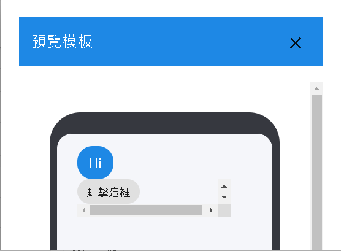
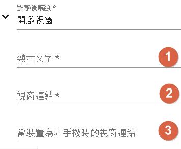
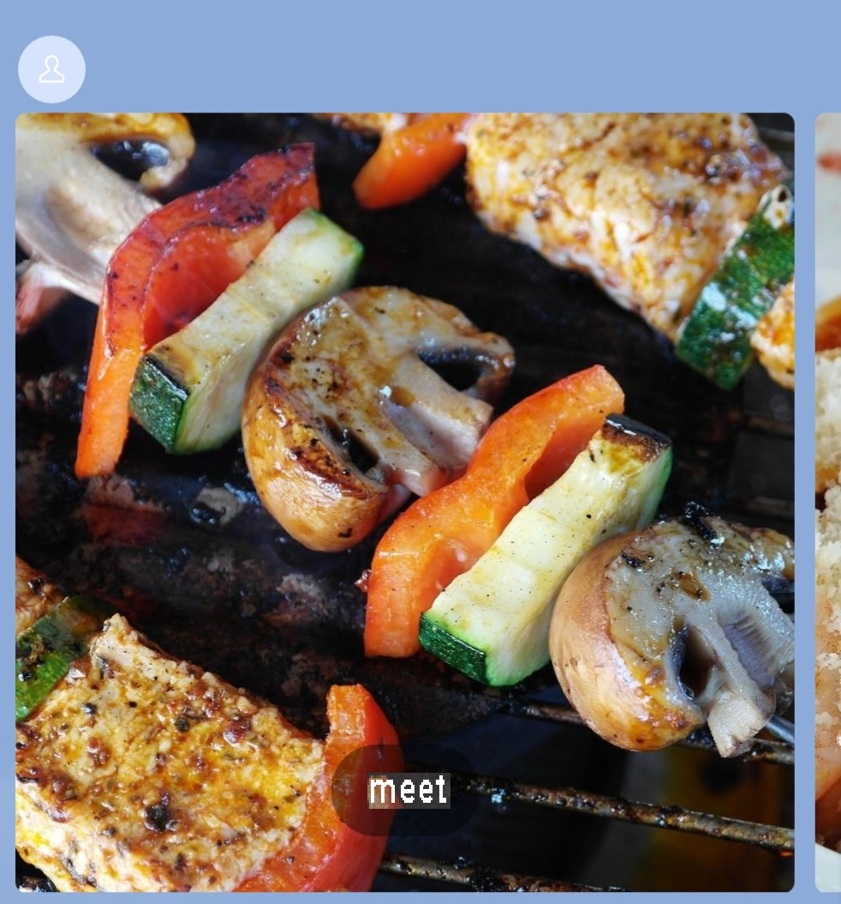
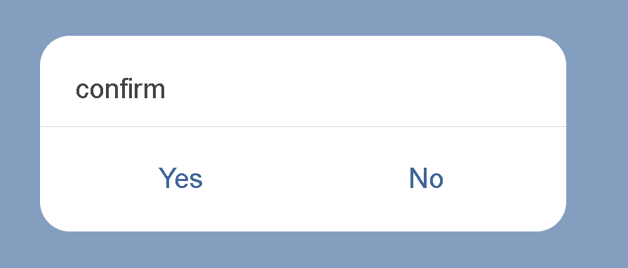
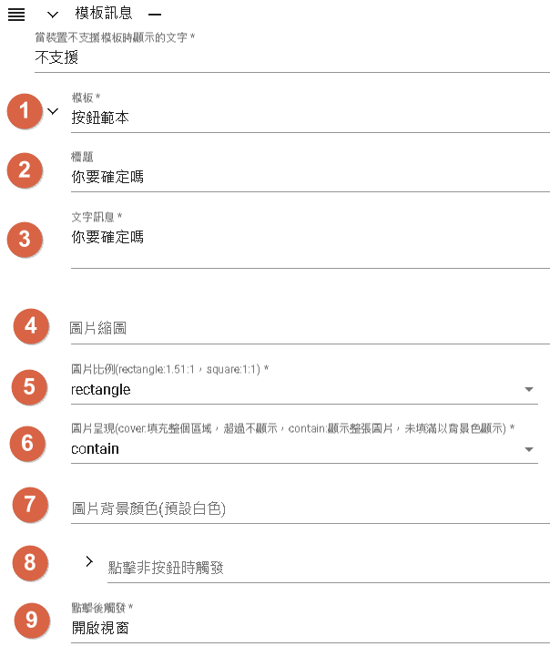
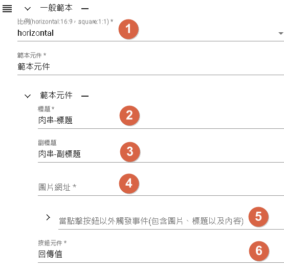
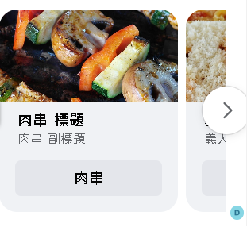
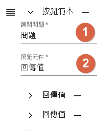

模板
模板分為對話模板以及記憶模板。
對話模板
串聯對話回覆：對話模板用於連接其他平台的對話回覆，使機器人能夠以自然的方式回應使用者的提問或指令。
簡化開發流程：通過事先定義和設計好的對話模板，開發人員可以更快速地建立和配置對話流程，節省開發時間和成本。
容易維護和修改：對話模板使得維護和修改對話流程變得更加容易，只需對模板進行修改或添加新的模板即可，而不需要對整個對話流程進行大規模的修改。
支援平台
目前僅支援LINE和Facebook的Messenger、Telegram。
LINE
文字訊息
機器人可以發送包含純文字內容的訊息給使用者。這是最常見和基本的訊息類型，用於傳達文字資訊。

預覽-文字訊息預覽[僅供參考]

快速回覆
- 即時回覆：當用戶發送訊息給機器人時，可以使用快速回覆快速回覆用戶，無需等待機器人進行其他處理或操作。
- 自動回覆：機器人可以預先設定一些常見的回覆內容，根據用戶的訊息內容，快速選擇相應的回覆內容，提供即時且個性化的回應。
- 提示選項：使用快速回覆可以向用戶提供一些選項按鈕，用戶可以直接點擊選項來回答或執行相應的操作，提供更便捷的互動方式。
- 快速操作：快速回覆也可以用於觸發特定的操作或指令，例如訂閱功能、查詢功能、預約功能等，用戶可以直接點擊按鈕來執行相應的操作，節省輸入的步驟和時間。
- 1.文字旁邊的icon：這是指在文字或按鈕旁邊顯示的小圖示，用於提供額外的視覺提示或識別。這些圖示可以用於區分不同的按鈕選項，增強用戶的理解和互動體驗。
- 2.物件觸發動作：地點、相片片捲(手機儲存圖片)、開啟視窗、回傳值、相機、時間選擇器、訊息文字。
- 3.顯示文字：icon旁邊的文字。
- 4.其他：為點選觸發動作後須填寫的資料。
圖片訊息
機器人可以發送圖片給使用者。這使得您可以傳送圖片檔案，讓使用者可以查看圖片的內容。

- 圖片格式：DmFlow 支援 JPEG 和 PNG 格式的圖片。
- 圖片大小：上傳的圖片大小限制為1MB[以系統顯示為主]以內。
- 縮圖大小：當顯示縮圖時，圖片大小限制為 1MB[以系統顯示為主]以內。這是為了確保縮圖能夠快速加載和顯示。
圖片網址：圖片的網址必須使用 HTTPS 協定，以確保安全性，網址支援10MB。
上傳圖片：使用者可以提供圖片的網址進行上傳。只要有有效的圖片網址，DmFlow 就可以將圖片上傳並使用。
- 1.垂直向左：將圖片垂直旋轉到左側。
- 2.垂直向右：將圖片垂直旋轉到右側。
- 3.上傳：上傳一個新的圖片。
- 4.放大：對圖片進行放大。
- 5.縮小：對圖片進行縮小。
- 6.取消圖片：取消當前圖片的顯示或操作。
預覽-圖片訊息預覽[僅供參考]

實際-圖片訊息預覽

影片訊息
機器人可以發送影片給使用者。這使得您可以傳送影片檔案，讓使用者可以觀看影片內容。

- 使用網址：在回覆訊息中，僅能使用網址來引用圖片或影片。這表示你可以提供圖片或影片的網址，讓機器人在對話中顯示它們。
- 影片支援：當引用影片時，僅支援使用 MP4 格式的影片。這意味著你需要提供 MP4 格式的影片檔案的網址。
- 影片大小限制：影片檔案的大小限制為 200MB 以內。確保你提供的影片檔案大小不超過此限制。
- HTTPS 協定：為了安全性和保護使用者的隱私，提供的圖片和影片網址必須使用 HTTPS 協定。請確保你所提供的網址是以 HTTPS 開頭的。
請注意遵守這些限制和要求，以確保圖片和影片能正確顯示並符合相關的安全標準。
語音訊息
機器人可以發送語音訊息給使用者。使用者可以聆聽您發送的語音內容。

- 使用網址：在回覆訊息中，僅能使用網址來引用語音檔案。這表示你可以提供語音檔案的網址，讓機器人在對話中播放語音。
- 語音支援：當引用語音時，僅支援使用 M4A 格式的語音檔案。這意味著你需要提供 M4A 格式的語音檔案的網址。
- 語音大小限制：語音檔案的大小限制為 200MB 以內。確保你提供的語音檔案大小不超過此限制。
- HTTPS 協定：為了安全性和保護使用者的隱私，提供的語音檔案的網址必須使用 HTTPS 協定。請確保你所提供的網址是以 HTTPS 開頭的。
請注意遵守這些限制和要求，以確保語音能正確播放並符合相關的安全標準。
圖文訊息

- 1.網址限制：在回覆訊息中，網址的大小限制為10MB以下。這表示你所提供的網址必須指向檔案大小在10MB以下的資源。同時，為了安全性和保護使用者的隱私，提供的網址必須使用 HTTPS 協定。
- DmFlow上傳圖片限制：在 DmFlow 平台上，上傳的圖片大小限制為1MB[以系統顯示為主]以內。這表示你在 DmFlow 平台上上傳的圖片將被限制在1MB以下的大小。請確保你上傳的圖片符合此限制。
- 2.替代文字：當使用者收到圖文訊息時，替代文字是顯示在圖片無法載入時所顯示的文字。這可以是一段描述圖片內容或提供相關資訊的文字。替代文字的目的是在圖片無法顯示時提供一個替代的內容給使用者。
- 3.圖文訊息-影片
- 4.圖文訊息-觸發動作
圖文訊息-影片

- 1.影片限制：目前 DmFlow 平台尚未支援直接上傳影片功能，因此只能使用網址來提供影片。在使用網址提供影片時，支援的影片格式為 MP4，且大小限制在200MB以內。同時，提供的影片網址必須使用 HTTPS 協定。
- 2.圖片預覽：在預覽圖片方面，DmFlow支援的圖片大小限制為1MB以內。請確保提供的圖片符合此限制。
- 3.水平位置：水平位置是指圖片或影片在訊息中的左右位置。該位置的值必須大於0，表示從左邊開始計算的位置。
- 4.垂直位置：垂直位置是指圖片或影片在訊息中的上下位置。該位置的值必須大於0，表示從上方開始計算的位置。
- 5.影片寬度：影片寬度指的是訊息中所顯示的影片的寬度尺寸。
- 6.影片高度：影片高度指的是訊息中所顯示的影片的高度尺寸。
- 7.影片結束後提供外部連結：在影片結束後，你可以提供一個外部連結給使用者。這可以是一個指向其他網頁或資源的連結。
- 8.外部連結名稱：外部連結名稱是指影片結束後顯示的連結文字，用於描述連結的內容或目的。
圖文訊息-觸發動作
圖文訊息-訊息文字
- 1.由上方開始位置計算：指的是元素在訊息中的垂直位置是由上方開始計算的。這意味著較小的數值表示元素離訊息頂部較近。
- 2.由左方開始位置計算：指的是元素在訊息中的水平位置是由左方開始計算的。這意味著較小的數值表示元素離訊息左側較近。
- 3.文字顯示高度：指的是文字在訊息中的垂直高度，即文字所占據的行數或垂直空間。
- 4.顯示出文字：指的是將文字內容在訊息中顯示出來，以供使用者閱讀。
- 5.文字顯示寬度：指的是文字在訊息中的水平寬度，即文字所佔據的字元數或水平空間。
- 6.備註：在特定情況下，當客戶端具備輔助功能時，可以提供備註功能。這可能包括對文字內容進行語音提醒，以協助視覺障礙者等特殊需求的使用者。
圖文訊息-開啟視窗
- 1.由上方開始位置計算：指的是元素在訊息中的垂直位置是由上方開始計算的。較小的數值表示元素距離訊息頂部較近。
- 2.備註：當客戶端具有輔助功能時，可以提供備註功能，例如進行語音提醒，以協助特殊需求的使用者。
- 3.文字顯示寬度：指的是文字在訊息中的水平寬度，即文字所佔據的字元數或水平空間。
- 4.由左方開始位置計算：指的是元素在訊息中的水平位置是由左方開始計算的。較小的數值表示元素距離訊息左側較近。
- 5.文字顯示高度：指的是文字在訊息中的垂直高度，即文字所占據的行數或垂直空間。
- 6.連結網址：指的是可以提供給使用者點擊的連結網址，這樣使用者可以點擊連結以獲取更多相關資訊或進行特定操作。
預覽-圖文訊息預覽[僅供參考]

紅色箭頭以及指向方框為輔助對齊線，影片僅用VIDEO提示位置以及高寬度，文字部分會將點擊後顯示文字標示(實際上不會出現該文字)，超連結也會將連結內容標示(實際上不會出現該連結文字)，以實際顯示為準。
實際-圖文訊息預覽

圖片輪播

- 1.當電腦版無法顯示的時候顯示的文字。
- 2.模板選擇「圖片輪播模組」
- 3.點擊後觸發分為訊息文字、回傳值以及開啟視窗
觸發動作
包含觸發動作-訊息文字、觸發動作-回傳值、觸發動作-開啟視窗
觸發動作-訊息文字

- 1.圖片上的文字按鈕顯示之文字。
- 2.當點擊按鈕後回傳的文字。
觸發動作-回傳值
- 1.圖片上的文字按鈕顯示之文字，在圖片上設置文字按鈕時，您可以為每個按鈕指定要顯示的文字。這些文字將出現在圖片上，以引導用戶進行相應的操作或獲取更多資訊。
- 2.訊息型態分為文字以及事件，在對話中，您可以使用文字或事件作為訊息的型態。文字訊息用於直接向用戶展示文本內容，而事件則觸發相應的動作或處理。
- 3.文字的細項僅有文字，事件的細項包括打斷事件、忽略事件、開始事件、結束事件、喚醒事件，在訊息中，文字細節僅包含要顯示的文字內容。而事件細節則根據不同的事件類型進行設置，例如打斷事件、忽略事件、開始事件、結束事件、喚醒事件等。詳細了解回傳值的使用，請參考連結回傳值的使用。
- 5.文字的詢問：透過對話，您可以向用戶提問文字內容，並將其作為用戶的回答傳遞給DmFlow進一步處理。這樣您可以與用戶進行對話互動，並根據他們的回答進行後續操作。
- 6.當用戶點此文字按鈕後，將會顯示在自己的LINE客戶端上的文字：當用戶點擊文字按鈕時，相應的文字內容將顯示在用戶的LINE客戶端上。這使您可以進一步提供用戶所需的相關資訊或指示。
回傳值
代表點擊該按鍵時會傳給DmFlow的數據，主要需要了解的是事件的細稱：
- 1.打斷事件：當用戶點擊打斷事件時，對話將直接跳轉到您所指定的場景。這可以用於中斷當前的對話流程，並使用戶進入特定的場景或子流程。
- 2.忽略事件：當用戶點擊忽略事件時，對話不會回復任何話語。這通常用於僅顯示特定數據或信息，而無需引起後台回復或觸發其他動作。這對於提供靜態內容或僅顯示提示信息非常有用。
- 3.開始事件：當用戶點擊開始事件時，可以重新開始當前的對話。這將重置對話狀態，使得用戶可以重新進行對話流程，從頭開始進行交互。
- 4.結束事件：當用戶點擊結束事件時，整個對話流程將結束。這意味著對話將不再繼續，並且不會有進一步的互動或回應。
- 5.喚醒事件：當某個節點進入沉睡狀態時，如果用戶點擊喚醒事件，將重新啟動該節點的執行。這對於具有睡眠模式的節點非常有用，用戶可以通過點擊喚醒事件來重新啟動與該節點相關的對話流程。
觸發動作-開啟視窗

- 1.圖片上的文字按鈕顯示之文字：當您在圖片上添加文字按鈕時，這些按鈕將顯示您指定的文字。用戶在點擊這些按鈕時，所顯示的文字將被傳遞給對話流程中的相應部分，以觸發相應的操作或回應。
- 2.手機裝置跳出的webview：當用戶點擊圖文訊息中的某個按鈕，並且該按鈕的觸發動作為開啟視窗時，如果用戶在手機裝置上點擊該按鈕，將會彈出一個 webview，顯示指定的網頁內容。這個 webview 可以在手機的 LINE 客戶端內顯示，讓用戶在不離開 LINE 的情況下進行網頁瀏覽。
- 3.非手機裝置跳出的網頁：當用戶點擊圖文訊息中的某個按鈕，並且該按鈕的觸發動作為開啟視窗時，如果用戶在非手機裝置（如電腦或平板）上點擊該按鈕，將會在新的瀏覽器窗口中打開指定的網頁。這樣的操作允許用戶在獨立的瀏覽器窗口中查看和操作指定的網頁內容。
預覽-圖片輪播預覽[僅供參考]
實際-圖片輪播預覽

確認範本

- 1.模板選擇「確認範本」：這是一種在對話中使用的預定義模板，用於顯示確認問題和選項的交互。您可以選擇該模板來創建一個包含確定性問題和相關選項的消息，以引導用戶進行選擇。
- 2.確認問題為二選一之詢問：在「確認範本」中，您可以設置一個二選一的問題，即提供兩個選項供用戶選擇。用戶可以從提供的選項中選擇一個作為回答。這種問題的目的是獲取用戶對於兩個選項中的偏好或選擇的答案。
- 3.：在「確認範本」中，每個選項都可以配置一個觸發動作。觸發動作定義了當用戶選擇了某個選項後應採取的操作。您可以根據業務需求配置觸發動作，例如發送一條特定的回覆消息，跳轉到另一個場景，調用API等。更多關於觸發動作的詳細資訊，您可以前往觸發動作了解。
預覽-確認範本預覽[僅供參考]

實際-確認範本預覽

按鈕範本

- 1.模板選擇「按鈕範本」：這是一種預設模板，用於顯示具有按鈕選項的訊息。您可以選擇此模板來創建一個包含按鈕的訊息，用戶可以點擊按鈕執行相應的操作。
- 2.標題，可根據預覽了解放置位置。
- 3.文字訊息，可根據預覽了解放置位置。
- 4.圖片縮圖，可根據預覽了解放置位置。
- 5.圖片比例
- 6.圖片呈現
- 7.背景顏色，當"圖片呈現"為contain時，會用此色碼填滿。
- 8.當點擊非按鈕時觸發(包含圖片、標題以及內容)，觸發動作
- 9.觸發動作
圖片比例
- rectangle=1.51:1
- quare=1:1
圖片呈現
- cover:填充整個區塊，超過不顯示
- contain:顯示整張圖片，未填滿以背景色填充
預覽-按鈕範本預覽[僅供參考]
實際-按鈕範本預覽

輪播範本

預覽-輪播範本預覽[僅供參考]

實際-輪播範本預覽

Facebook Messenger
文字及其他訊息

文字以及圖片(可上傳，1mb以內)，其他如影片、音訊、檔案都僅支援網址連接。
實際-文字訊息預覽
一般範本

- 1.horizontal:16:9, square:1:1
- 2.標題，可根據預覽了解放置位置。
- 3.副標題，可根據預覽了解放置位置。
- 4.圖片，可根據預覽了解放置位置。
- 5.連結元件、連結元件(extension)
- 6.觸發條件包含連結元件、連結元件(extension)以及觸發動作-回傳值。
預覽-一般範本預覽[僅供參考]
實際-一般範本預覽

連結元件、連結元件(extension)
連結元件

- 1.網址連結
- 2.網址名稱
- 3.FULL(100%)、COMPACT(50%)、TAIL(75%)
連結元件(extension)

- 1.網址連結
- 2.網址名稱
- 3.FULL(100%)、COMPACT(50%)、TAIL(75%)
- 4.不支援時連結的網址
按鈕範本

- 1.詢問問題。
- 2.按鈕元件包含連結元件、連結元件(extension)以及觸發動作-回傳值。
預覽-按鈕範本預覽[僅供參考]

實際-按鈕範本預覽

Telegram
文字訊息
機器人可以發送包含純文字內容的訊息給使用者。這是最常見和基本的訊息類型，用於傳達文字資訊。
檔案訊息
機器人可以發送檔案給使用者。這包括各種類型的檔案，如文檔、圖片、音頻等。使用者可以點擊檔案訊息來下載或查看相應的檔案。
圖片訊息
機器人可以發送圖片給使用者。這使得您可以傳送圖片檔案，讓使用者可以查看圖片的內容。
語音訊息
機器人可以發送語音訊息給使用者。使用者可以聆聽您發送的語音內容。
影片訊息
機器人可以發送影片給使用者。這使得您可以傳送影片檔案，讓使用者可以觀看影片內容。
位置訊息
機器人可以發送地理位置訊息給使用者。這使得您可以分享特定位置的地理座標，讓使用者可以在地圖上查看該位置。
多媒體訊息
多媒體訊息是指包含多種媒體元素（如圖片、音頻、視頻等）的訊息。它可以結合不同的媒體元素，以提供更豐富和多樣化的訊息內容。
額外功能
Telegram提供以下是一些基本功能，通常在訊息發送功能中提供的選項：
回覆鍵盤模板：這是一種用於快速回覆的選單或按鈕模板，讓使用者可以輕鬆選擇預定的回覆內容或執行特定的操作。您可以自行建置回覆鍵盤模板，包括選擇按鈕的樣式、文本內容和相應的操作。
訊息格式：您可以根據需要調整訊息的格式，例如使用Markdown、MarkdownV2或HTML等標記語言來設定文字的樣式、加粗、斜體、連結等。這些標記語言允許您更好地呈現文字內容，使其更具可讀性和視覺效果。
關閉提醒：在某些聊天應用程式或平台中，您可以設置是否關閉或啟用提醒功能。這意味著當您發送訊息時，使用者是否會收到通知或提示。您可以根據需要來控制是否要通知使用者新的訊息到來。
記憶模板
記憶模板分為使用者參數、使用者標籤、機器人參數以及單一會話儲存。
- 1.使用者參數：這是用於儲存使用者的資料的欄位。它們可以包含各種屬性，例如文字、數字、時間等。這些參數可以在對話的不同階段中使用，以便記錄和檢索使用者的相關資訊。
- 2.使用者標籤：使用者標籤是一種標記或標示，用於標記和識別使用者的特定屬性或特點。這些標籤通常與使用者的行為、偏好或特定特徵相關聯。機器人可以根據使用者標籤進行個性化的回應或執行特定的操作。使用者標籤通常會記錄標籤被應用的次數以及最後一次應用的時間。
- 3.機器人參數：這些是機器人的永久參數，用於存儲全域的設定或配置值。這些參數通常以特定的前綴（例如config）來標識，以區分於其他類型的參數。機器人參數可以用於設定機器人的行為、調整設定或儲存全域的變數。
- 4.單一會話儲存：這是用於在單一會話期間暫時儲存資料的欄位。這些欄位可以包含各種屬性，例如文字、數字、時間、列表等。在特定的對話期間，機器人可以使用這些欄位來記錄、處理和檢索與該會話相關的資訊。一旦會話結束，這些暫存的資料通常會被清除或丟棄。
屬性
- 1.文字：文字參數用於儲存一般的文字資料。這可以是用戶輸入的文字、機器人生成的回應、或是其他需要儲存的文字訊息。文字參數可以包含任何字串值，例如使用者名稱、地址、問題描述等。
- 2.數字：數字參數用於儲存數值型態的文字資料。這可以是用戶輸入的數字、機器人計算的結果、或是其他需要儲存的數值訊息。數字參數可以進行數值運算、比較和其他數字相關的操作。
- 3.時間：時間參數用於儲存日期或時間型態的文字資料。這可以是特定事件發生的日期時間、預定的會議時間、或是其他需要記錄時間資訊的情境。時間參數可以用於時間比較、顯示日期時間格式等操作。
- 4.列表：列表參數允許儲存多個欄位值，其中一個欄位作為主鍵來標識列表的項目。列表可以用於儲存複數的相關資料，例如用戶的訂單清單、購物車中的商品列表、或是其他需要組織和存取多個相關值的情境。列表參數可以方便地擷取、更新和操作列表中的特定項目。
接著讀
最後更新時間
2023/05/22
- 移除自動補全領域功能
- 新增Telegram解說
- 移除postback包含場景的填寫。
- 新增事件-喚醒事件